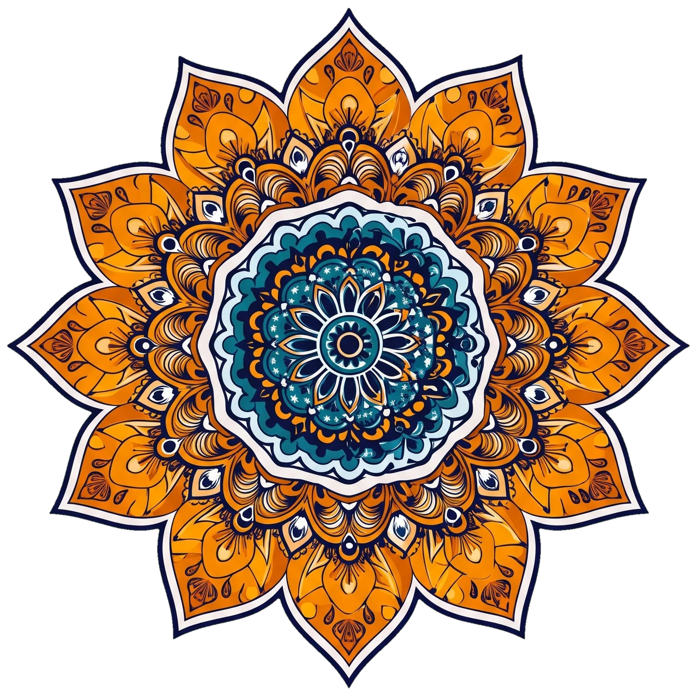

Mandala 2 orqada soat strelkasiga teskari, Mandala 2.1 uning ustida markazda soat strelkasi bo'yicha teskari aylanadi. Mandalaning markazi ekranning chap chekkasida joylashgan va o'ng yarmi ko'rinadi.
65 000 so'mSahifa skroll bo'lganda mandala silliq aylanadi, to'xtaganda esa rAF batareya va CPU ni tejash uchun to'xtaydi.
85 000 so'mKartochkalar shaffof oq-feruza liquid glass uslubida bo'lib, naqshlar matnni to'smaydi va kontrast ≥ 4.5:1 talabiga to'liq javob beradi.
120 000 so'm